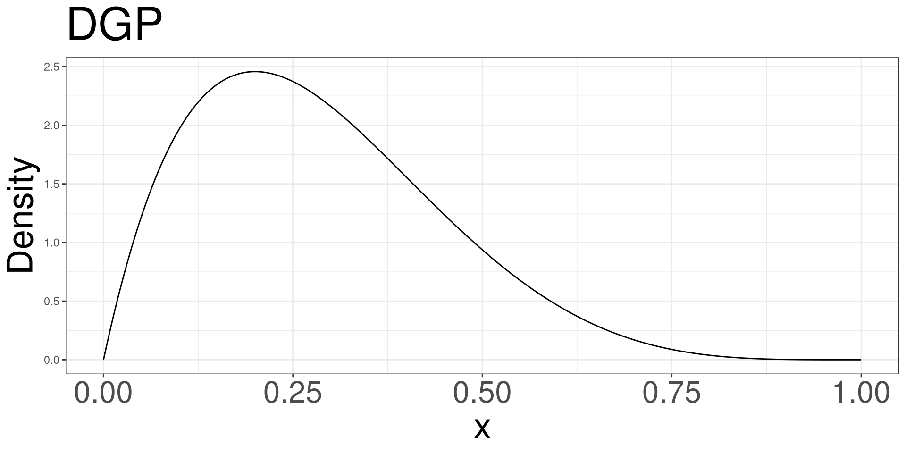
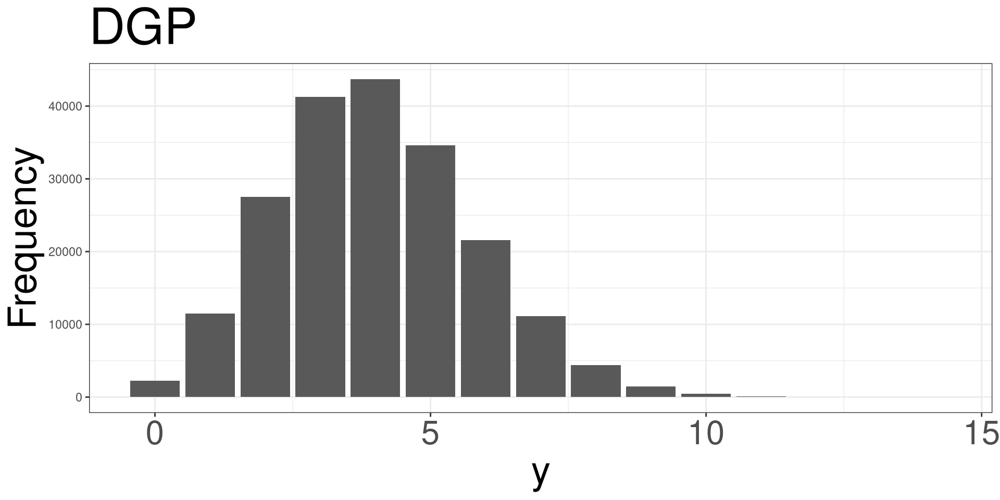
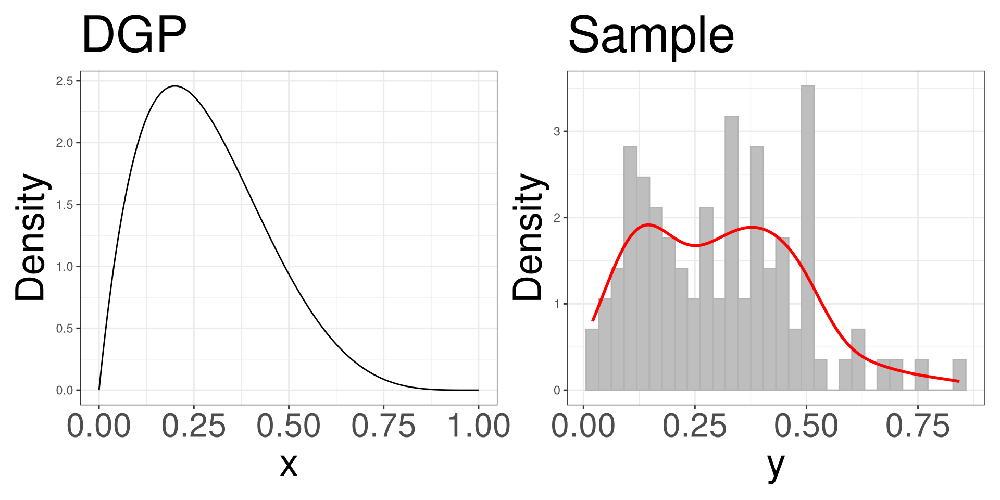

Data Generating Process
Data
Data
Measurements
Study Design
Sampling
Data Generating Process
Statistical Model
Observations
An observation is the unit which contains information to be obtained.
Also known as experimental unit.
Data
Data is information from a particular experimental unit. There can be more that one piece of information per experimental unit.
Data Structure
The structure of the data can be represented in various forms:
A list of long numbers
Table
Tabular Form
Measurements
Data
Measurements
Study Design
Sampling
Data Generating Process
Statistical Model
Measurements
Measurements are the processes where we represent an attribute of an experimental unit as either a number or category.
Quantitative Measurements
Quantitative measurements are data measurements that take a numeric form.
Qualitative Measurements
Qualitative measurements are data measurements that take a certain category.
Value
A value is a description (number or category) of a specific attribute of an experimental unit.
Variable
A variable is the descriptive attribute that we want to obtain from an experimental unit. In terms of a data set, the variable contains all the values of specific attribute in a sample.
Study Design
Data
Measurements
Study Design
Sampling
Data Generating Process
Statistical Model
Research Question
- A research question is designed to create new knowledge of certain phenomenons observed in the world.
- This is designed by conducting a research projects that systematically answers the question.
- The study design is the procedure in which data is collected to answer the question, while reducing any potential bias while conducting the study.
Study Design
This is the procedure designed to answer a research question.
Entails procedures to collect data that answers a research question.
Dictates how the data will be analyzed.
Determines how the data is quantified and what is the experimental unit.
Sampling
Data
Measurements
Study Design
Sampling
Data Generating Process
Statistical Model
Sampling
The process of a selecting a small subset from a large population.

Sampling
When Sampling you want to maintain these properties:
Representative sample
Large enough sample size
Sampling Example
We want to answer the question, are people happy?
Random Sampling
When sampling, we strive for random sampling
Each unit in the population of interest must have an equal probability of being selected for the study.
This ensures a representative population
Independent Sampling
In addition to random sampling, we strive to make sure each unit is independent from each other.
- The probability of UNIT A being sampled will not affect the probability of UNIT B to be sampled.
Sampling Variation
Random samples may vary from the population of interest.
Due to randomness, samples many not look the or biased.
However, this is to be expected as because the sample will not be biased in one way or another.
Samples are then considered unbiased as long as experimental units were collected randomly.
Data Generating Process
Data
Measurements
Study Design
Sampling
Data Generating Process
Statistical Model
Data
The measurement collected from an experimental unit.
Data Distribution
When thinking about data, we know an attribute is allowed to vary. With this variation, some numbers are more likely to be observed than others.
Forest from the trees

Sample
When inspecting data:
Do not focus on one individual data point.
See how data points is in relation to other data points.
See what is common
See what is rare
Data Generation Process (DGP)
The data generation process is understanding how variation from the population is transferred to the data collected.
A population has a mechanism to produce data, understanding this mechanism is essential understanding the data.
DGP
A populations DGP can be defined with the following characteristics:
The potential outcomes that can be observed when measuring
Each potential outcome will have a probability of being observed
- The probability must be between 0 and 1
Sum of all the probabilities of each outcome will add up to 1
Flipping a Coin
Flipping a coin results in either heads or tail.
The probability for heads is 50%
The DGP of flipping a coin is the process of selecting an outcome, given the probability of both options are 50%.
Rolling a die

Measuring Body Temperature
Inference
How do we use DGP and sampling to understand the world?
We can use a sample to understand the DGP.
We can use the DGP to understand the sample.
Visualizing a DGP
Visualizing DGP
Example
Statistical Model
Data
Measurements
Study Design
Sampling
Data Generating Process
Statistical Model
Statistical Model
\[ Y \sim F(\theta) \]
- \(Y\): A data value generated for DGP
- \(F\): A generic mathematical model that describes the DGP
- \(\theta\): Parameter controlling the shape and form of the DGP
Statistical Model
\[ Y = \beta + \varepsilon \]
- \(\beta\): The average value we expect to see
- \(\varepsilon \sim F(\cdot)\): Error Term
Statistical Model
\[ Y = \beta + \varepsilon \]
\(\beta\): Explained Part
- This is what we expect to see if we took an educated guess
- The educated guess can incorporate information that is related to \(Y\)
\(\varepsilon\): Unexplained Part
- Randomness
- Incorporates several types of variation
- Measurement Error
- Biological Error
- Environmental Error
m201.inqs.info/lectures/1